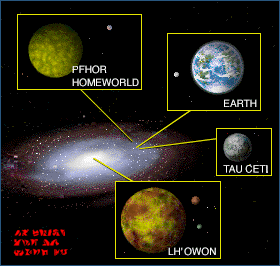
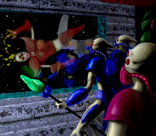
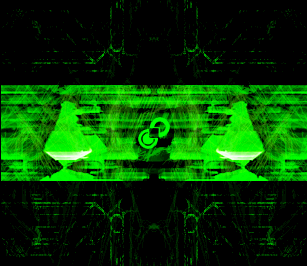
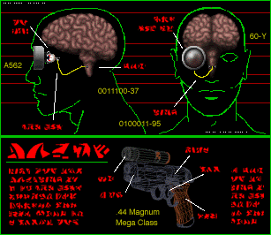
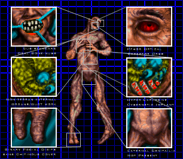
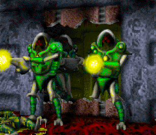
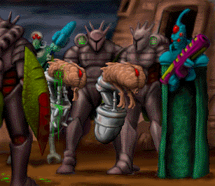

***INCOMING MESSAGE***
****************************
****************************
<Unauthorized access-alarm 2521->
<Security Breached 23-f<432.82.38.198>->
<Loading data from 07-<data/univers/0xff576>->
**************************************************************************
**************************************************************************
En 2395, la lune martienne Déimos est rachetée par l'UESG (United Earth Space Government) pour la construction du vaisseau-colonie interstellaire Marathon. Le but n'était pas moins de convertir la lune en un vaisseau. Les travaux commencèrent entre 2405 et 2408. À cette même époque, les colons humain sur Mars - les martiens - commencèrent une rébellion contre le gouvernement terrien, menés par le groupement terroriste MIDA (Martian Interplanetary Defense Alliance).  En effet, alors que l'économie martienne était en désastreux état et que la famine menaçait à la suite de l'échec des vaisseaux de transport CRIST (Cargo and Resources In-System Transports) chargés de ravitailler Mars en matériaux et nourriture, le gouvernement terrien semblait se désintéresser de leur situation.
En 2442, les martiens, poussés par la faim, attaquèrent la réserve gouvernementale de nourriture de Misriah. Les troupes anti-émeutes de l'UESG ouvrirent le feu sur les émeutiers. Ce fut un véritable carnage, surnommé depuis le « massacre de Misriah » : plus de trois cent martiens affamés furent tués. Bien que cela ne fut jamais prouvé, il semblerait que ce soit le MIDA qui a incité l'émeute afin d'attirer l'attention de la Terre sur Mars. Ils allèrent même jusqu'à cacher des munitions à bord du Marathon en construction, bien que le rachat du vaisseau ne fut jamais tenté. En 2466, le MIDA tenta un coup d'État et pris le contrôle du gouvernement martien durant une courte période. Mais le coup échoua et les leaders du groupe furent exécutés.
Le projet Marathon fut néanmoins achevé dans les temps et il fut lancé en 2472. Il y avait trois intelligences artificielles à bord du Marathon : Durandal s'occupait des fonctions autonomes du vaisseau comme les portes, les ascenseurs, le recyclage de l'air ou les cuisines ; Tycho contrôlait le département scientifique ; et Leela était en charge des relations avec l'équipage. Durandal était un descendant de Traxus IV, un ordinateur qui fut atteint du syndrome Rampant et finit par crasher en 2206, entraînant une gigantesque coupure du réseau planétaire martien.  Dix cyborgs militaires Mjolnir Mark 9, qui restaient probablement de la guerre entre Icarus et Thermoppylae en 2194, furent également placés à bord du Marathon parmi l'équipage humain.
En 2773, le Marathon arriva à sa destination, la planète Tau Ceti IV, après plus de trois cent ans de voyage. L'équipage fut réveillé de son sommeil cryogénétique et la colonie fit établie en 2787 sur la planète. Neuf cyborgs furent assimilés à la colonie, le dixième étant probablement resté à bord du Marathon. Durant le voyage, Durandal était devenu de plus en plus Rampant. Il détecta un vaisseau dans un système lointain et l'attira vers le Marathon pour une raison inconnue. Peut être projetait-t-il de s'échapper à bord de ce vaisseau car il se sentait emprisonné ? Un syndrome du Rampant est une grande volonté de pouvoir et de liberté.
Ce fut en tout cas le début des ennuis. Les occupants du vaisseau étaient les Pfhors, une race d'aliens esclavagistes qui obtinrent leur technologie avancée d'une race très ancienne et supérieure : les Jjaro. (Pour anecdote, les Jjaro furent en contact avec les terriens en 1994. Cet événement est relaté dans un jeu de Bungie précédant Marathon, Pathways into Darkness, un autre jeu de Bungie sorti en août 1993.)
Le 25 juillet 2794 à 8h30, le vaisseau Pfhor attaque le Marathon. C'est le début du jeu Marathon. Durandal et Tycho sont rendus inopérant dès la première attaque, tandis que Leela est endommagée. Le dixième cyborg (vous) est réveillé de son sommeil artificiel pour se battre aux côtés de Leela et essayer de repousser l'invasion des Pfhors.
**************************************************************************
**************************************************************************
<< Les IA du vaisseaux Marathon&
-

- Leela: L'intelligence artificielle qui vous prendra en main dès votre arrivé sur le vaisseau Marathon. Très dévouée, elle ne pourra vous suivre très longtemps sous les attaques des Pfhors.
- Durandal: L'infernal IA Rampant qui vous fera vivre un cauchemar dans Marathon 1, et qui vous emmènera dans ses bagages pour délivrer la planète natale des S'pht contre les Pfhors. Durandal est responsable du contrôle des systèmes automatiques du vaisseau : portes (sauf les portes automatiques qui sont sous son contrôle indirect), support vital, cuisines, recycleurs d'air, étages etc.
- Tycho: Détruit lors de l'assaut initial du Marathon, il sera réactivé par les Pfhors. Tycho contrôle la technologie et l'architecture de réseau du vaisseau.
>> Les Cyborgs Mjolnir Mark IV
Les Cyborg militaires Mjolnir Mark IV sont un type évolué de cyborg, qui furent les premiers à pouvoir évoluer sans se faire remarquer dans la société humaine. Bien qu'ils soient composés de nombreux organes humains, les Mjolnir sont bien plus rapides, forts et résistants que n'importe quel humain. Ils sont l'arme de combat humaine la plus efficace sur le terrain.
Après la guerre entre l'astéroïde d'Icarus et la République de Thermopylae en 2194, qui vit l'utilisation massive de Mjolnir, l'utilisation des Cyborgs fut strictement régulée. Néanmoins, dix Mjolnir Mark IV furent introduits en secret dans le Marathon avant son lancement, lors de l'insurrection sur Mars. L'insurrection échoua rapidement, et on n'a jamais connu les desseins des cyborgs à bord du Marathon.
Les cyborgs furent néanmoins très utiles lors de l'attaque de la colonie sur Tau Ceti par les Pfhor en 2794 : neuf d'entre eux aidèrent les colons à repousser les Pfhor lors de la première attaque, mais furent détruits lors du bombardement massif de la seconde attaque. On ne sait pas exactement ce qu'il est arrivé au Dixième Mjonir resté sur Marathon, mais des rumeurs disent qu'il aurait seul repoussé la première vague d'attaque sur Marathon, avant de partir avec l'IA Durandal dans un vaisseau Pfhor capturé.
**************************************************************************
**************************************************************************
Les autres humains que le joueur rencontre lors du jeu sont surnommés les BOB (qui signifie Born On Board). Dans Marathon, la plupart sont non armés et ignorent le joueur ; dans Marathon 2 et Marathon Infinity ils peuvent utiliser des armes et attaquer les ennemis.
Grâce à l'étude des organismes humains, les Pfhor ont créé des BOB assimilés, qui sont des bombes vivantes. Ceux-ci sont appelés simulacres. Indifférenciables à la vue des vrai BOB, ceux-ci foncent vers vous et éclatent. Ils portent toujours des uniformes verts (mais tous les BOB verts ne sont pas des simulacres) et ont du sang jaune.  Ils sont particulièrement un problème dans les niveaux dans lesquels il faut protéger les BOB : il faut éliminer tous les simulacres sans tuer de vrai BOB.
Les BOB assimilés sont reconnaissable par le fait qu'ils disent des phrases particulières, comme « Don't shoot! » (ne tirez pas!), « I'm out of ammo! » (j'ai plus de munitions!), « Thank God it's you! » (Merci Dieu c'est vous!), « Kill me! » (tue moi!) ou encore « Frog blast the vent core! ». Cette dernière phrase dénuée de sens est célèbre dans la série des Marathon ; elle permet de trahir les BOB assimilés. Doug Zartman, qui a enregistré les voix des BOB, devait improviser une phrase aléatoire, et c'est ce qu'il obtenu : « Frog blast the vent core! ». Dire cette phrase au cours d'une partie en réseau de Marathon ou d'un chat est très populaire dans la communauté Marathon, le fait qu'elle ne veut rien dire lui permettant d'être sortie à n'importe quel moment. Cette phrase est réapparue cachée dans d'autres jeux plus récents comme Myth et Tron 2.
Les F'lickta sont les créatures natives de Lh'owon, vivant dans les égouts, l'eau ou la lave. Ce sont les ancêtres des S'pht. Ils ont un système digestif simplifié : ils absorbent des nutriments de la substance dans laquelle ils vivent. Ils sont extrêmement irritable, et entrer dans leur terrier non armé n'est pas recommandé.
On en sait peu sur les Jjaro, une espèce extrêmement évoluée qui a disparu de notre galaxie il y a plusieurs millions d'année (on ne les voit pas apparaître dans le jeu). Une partie de leur technologie est tombée entre les mains des Pfhor. Les Jjaro possédaient une technologie très avancée sur les cyborg (qui a été utilisée pour créer les S'pht), une arme très puissante connue sous le nom de Trih'Xeem (qui sera volée et utilisée par les Pfhor pour détruire Lh'owon), et la capacité de déplacer des planètes entières en déformant l'espace autour d'elles.
Les Jjaro sont apparus dans un jeu plus ancien de Bungie, Pathways Into Darkness.
Les Pfhor sont une race extraterrestre antique, des esclavagistes cherchant à contrôler la galaxie et à exécuter de nombreux contrats mauvais dans les jeux. Les Pfhor sont bipèdes, plus légers, plus fin et légèrement plus grand que les humains, ont trois yeux rouges et la peau grise. Les Pfhor sont regroupés en différents clans et unités, qui se battent parfois entre eux :
- Le type le plus basique et le plus courant est le Fighter (Chasseur), un Pfhor légèrement blindé utilisant une lance de choc pouvant éventuellement lancer des projectiles d'énergie (pour les types orange et bleu). Les Fighter existent dans quatre classes différentes, par ordre croissant : vert, pourpre, orange, bleu;
- Les Trooper (Fantassins) sont équipés pour des conditions de non pressurisation. Ils ont des armures fortement blindées et un fusil automatique pouvant lancer des grenades. Les Troopers sont de deux types : vert et pourpre; 
- Les Hunter (Chasseurs) sont les troupes d'assaut des Pfhor. Ils utilisent sur l'épaule une arme à énergie et ils sont lourdement blindés. Ils sont de quatre classes différentes : (par rang croissant) brun, vert, pourpre, et bleu;
- Les Enforcer (autorités) sont les « MP » des Pfhor. Ils portent des manteaux étranges et des armes aliens. Ils de deux types : bleu/orange (Marathon) et vert/bleu (Marathon : Durandal et Marathon Infinity);
- les Juggernaut sont les chars des Pfhor. Ces énormes plates-formes volantes lourdement armées sont au croisement entre un char d'assaut et un hélicoptère d'attaque. Ils sont dotés de deux lance-roquettes et d'une arme alien à double canon. Ils sont de deux types : dangereux et très dangereux (bleu et brun). Dans Marathon : Infinity, les Juggernaut sont capables de tirer leurs roquettes deux fois d'affilée.
 Les S'pht, ou Compileurs, sont une race d'aliens cyborg, créés par les Jjaro à partir des F'lickta pour terraformer Lh'owon. Ils ont été réduits en esclavage par les Phfor et libérés en masse par Durandal dans Marathon 2. Les Compileurs sont dans des corps cybernétiques volants. Les composants biologiques du compileur sont si liés à la machine qu'ils ne peuvent survivre sans elle. Le vrai corps du compileur est très petit, ressemblant à un cerveau de mamalien, sauf que les neurones sont plus fins et complexes. Ils ont la capacité de s'interfacer avec les ordinateurs du Marathon pour les pirater ou prendre leur contrôle. Ils existent en deux couleurs : les orange et les pourpres. Certains plus puissants sont aussi invisibles.
Il existait 11 clans S'pht sur Lh'owon :
- S'pht'Lhar ;
- S'pht'Lhar ;
- S'pht'Hra ;
- S'pht'Nma ;
- S'pht'Kah ;
- S'pht'Vir ;
- S'pht'Yra ;
- S'pht'Val ;
- S'pht'Shr ;
- S'pht'Mnr ;
- S'pht'Yor ;
- S'pht'Kr, le onzième clan S'pht, surnommé le clan perdu par les autres clans.
Seuls les S'pht'Kr réussirent à s'échapper de l'esclavage Pfhor. Ils sont forcés de fuir sur la deuxième lune de Lh'owon, K'lia, pour fuir la guerre contre les S'pht'Mnr en l'an 811. Il réussissent à expulser leur lune K'lia du système Lh'owon lors de l'attaque Pfhor en 1811 en utilisant une puissante technologie héritée des Jjaro (du nom de Y'rr).
**************************************************************************
**************************************************************************
- Sol est le nom donné au soleil. Le système solaire fut progressivement colonisé par les humains.
- La Terre : la planète d'origine de l'humanité.
- Mars : la première et la plus importante colonie humaine après la Terre.
- Tau Ceti est l'objectif du vaisseau-colonie Marathon. La colonie sera fondée en 2787 après plus de 300 ans de voyage. Tau Ceti est située à 92 années-lumière de la Terre.
- Lh'owon est la planète natale des S'pht. Elle se trouve près du centre de la voie lactée, à 97 années-lumière du noyau. Dans Marathon 2 Durandal essayera de reprendre cette planète des mains des Pfhors. Lh'owon possède trois lunes, qui sont, dans l'ordre :
- T'jia
- K'lia
- Y'loa
- Marathon est le nom du vaisseau colony que les Pfhors ont attaqué dans Marathon 1.
- Le Boomer est le vaisseau des Pfhors pris par Durandal dans Marathon 1 et qu'il a rebatisé ainsi. Il sera détruit dans Marathon 2. Gigantesque, le vaisseau Pfhor mesure près de deux kilomètres de long.
***END MESSAGE***